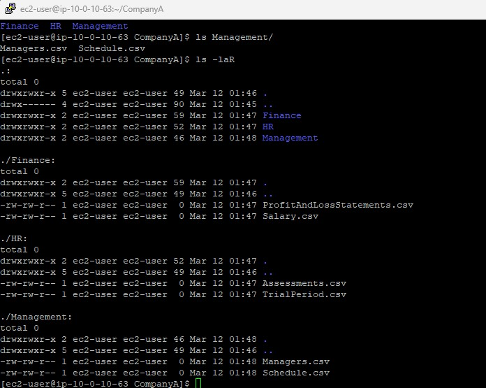
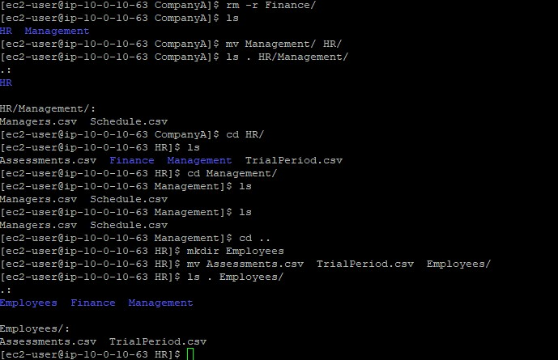

Build the Structure
Created the CompanyA directory with three subdirectories
and six CSV files using mkdir and touch.
Create a company folder structure with directories and files, then reorganize it by copying, moving, and deleting files and directories.
Connected via PuTTY (as described in Lab 225). Built a CompanyA folder structure with three departments (Finance, HR, Management) and their files. Then reorganized the structure by moving Finance and Management under HR, and creating a new Employees folder.
Created the CompanyA directory with three subdirectories
and six CSV files using mkdir and touch.
Moved Finance and Management under
HR, created Employees, and relocated files
using cp, mv, rm, and rmdir.
Detailed record of each task performed during the lab.
pwd to confirm the current directory was
/home/ec2-user.
mkdir CompanyA.cd CompanyA.mkdir Finance HR Management.
ls: Finance, HR, Management.cd HR and created files with
touch Assessments.csv TrialPeriod.csv.
cd ../Finance and created
touch Salary.csv ProfitAndLossStatements.csv.
cd .. and created files in
Management using relative paths:
touch Management/Managers.csv Management/Schedule.csv.
ls -laR.
touch and ls commands can be used two ways:
directly in the current folder, or with a relative path (e.g.,
touch Management/Managers.csv from the parent directory).
pwd:
/home/ec2-user/CompanyA.
cp -r Finance HR.ls HR/Finance.rmdir Finance,
which failed because the directory was not empty.rm Finance/ProfitAndLossStatements.csv Finance/Salary.csv.
rmdir Finance.
ls: only HR and Management remained.mv Management HR.ls . HR/Management.cd HR.mkdir Employees.mv Assessments.csv TrialPeriod.csv Employees.
ls . Employees:
HR now contains Employees, Finance, and Management.
rmdir command only works on empty directories.
To remove a non-empty directory, either delete its contents first
or use rm -r to recursively remove everything.
Commands used in this lab for file system management.
mkdirCreates one or more directories.
mkdir folder1 folder2 : Create multiple directories at oncetouchCreates empty files or updates timestamps of existing files.
touch file1.csv file2.csv : Create multiple files at oncetouch folder/file.csv : Create a file using a relative pathcpCopies files or directories.
-r : Copy recursively (required for directories)mvMoves or renames files and directories.
mv source destination : Move a file or directorymv file1 file2 folder/ : Move multiple items at oncermRemoves files.
rm file1 file2 : Remove specific files-r : Remove directories and their contents recursivelyrmdirRemoves empty directories only. Fails if the directory contains files.
ls -laRLists all files recursively with detailed information (permissions, owner, size, date).
mkdir
and populate them with files using touch.cp -r
and move files with mv.rmdir (empty directories only)
and rm -r (recursive removal).touch
and ls to work with files in other directories.This lab covered the essential file system operations in Linux: creating, copying, moving, and deleting files and directories. These are fundamental skills for organizing and maintaining file structures on Linux servers.
The key distinction between rmdir and rm -r
is a safety feature: rmdir prevents accidental deletion of
directories that still contain data, while rm -r is more
powerful but requires caution.